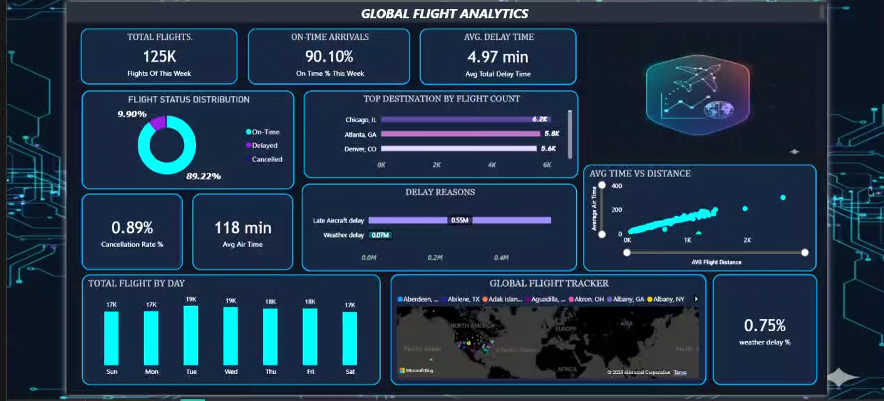

POWER BI
Global Flight Analytics
An interactive Power BI dashboard analyzing global flight operations, delays, cancellations, routes, destinations, and overall flight performance.
Key Insights
- Flight status and delay patterns were analyzed to understand overall performance.
- Delay reasons were compared to identify the major factors affecting flight operations.
- Routes, destinations, distance and flight frequency were analyzed for operational trends.